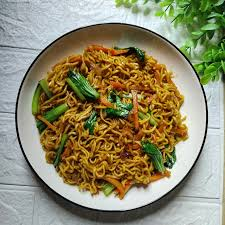

Beranda
Bakmi Goreng

Deskripsi
Bakmi goreng adalah hidangan mie goreng khas Indonesia yang populer
dengan cita rasa manis, gurih, dan sedikit smoky. Berasal dari
pengaruh kuliner Tionghoa (Hokkien), kata "bakmi" secara harfiah
berarti "mie daging".
Bahan yang dibutuhkan:
- Mie: Menggunakan mie telur kuning (basah atau kering).
-
Protein: Ayam fillet, telur (orak-arik), bakso sapi, udang, atau
sosis.
- Sayuran: Sawi hijau (caisim), kol, tauge, dan daun bawang.
-
Saus & Bumbu: Kecap manis, saus tiram, kecap asin, dan minyak
wijen.
Langkah-langkah pembuatan:
-
Persiapan Mie: Rebus mie kuning basah atau mie telur selama 2-3
menit hingga matang, tiriskan, dan campur dengan sedikit minyak
goreng atau kecap manis agar tidak lengket dan bumbu lebih
merata.
-
Menyiapkan Bumbu: Haluskan bumbu (bawang putih, bawang merah,
kemiri, lada). Bisa juga ditambahkan ebi agar lebih gurih.
-
Menumis Bumbu & Protein: Panaskan sedikit minyak, tumis bumbu
halus hingga wangi dan tidak langu. Masukkan telur dan buat
orak-arik, disusul ayam suwir, udang, atau bakso/sosis.
-
Memasak Sayuran: Masukkan sayuran seperti sawi hijau, kol,
wortel, atau tomat, lalu masak hingga layu.
-
Pencampuran & Seasoning: Masukkan mie yang sudah direbus.
Tambahkan kecap manis, kecap asin, saus tiram, garam, dan kaldu
bubuk.
-
Penyelesaian: Aduk rata dengan api besar sebentar agar bumbu
meresap dan kecap terkaramelisasi (aroma sangrai). Tambahkan
daun bawang, aduk sebentar, lalu angkat.
-
Penyajian: Sajikan dengan taburan bawang merah goreng, acar, dan
irisan cabe rawit.
Tips
Gunakan api besar saat menumis mie agar mendapatkan aroma wajan yang
khas (wok hei).